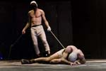
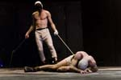

LUNEDI 21 DICEMBRE ORE 21
Pinocchio
da Carlo Collodi
adattamento e regia Maria Grazia Cipriani
con Giandomenico Cupaiuolo, Elsa Bossi, Giacomo Pecchia, Giacomo Vezzani,
Elena Nenè Barini, Nicolò Belliti,
Jonathan Bertolai, Carlo Gambero
Davvero travolgente questo Pinocchio. La teatralità cresce moltiplicando forme e riferimenti, circo e cabaret, melodramma e divertimento grottesco, densa e rigorosa recitazione d’attore.
In bilico tra fiaba e poesia, tra sogno e realtà, Pinocchio è il nuovo capolavoro del Teatro del Carretto. Non sorprende che la compagnia abbia trasformato il capolavoro di Collodi in una meravigliosa trasposizione scenica, di intensa magia visiva, che segna l’apice della maturazione artistica del gruppo toscano.
Il Pinocchio magistralmente interpretato da Giandomenico Cupaiuolo vive il suo sogno e la sua fiaba con burlesca meraviglia, scherza con la sublime incoscienza dell’essere marionetta, un po’ finto e un po’ vero, un po’ Pulcinella un po’ Arlecchino.
Eccellente spettacolo d’invenzione, trasformazione, tradimento. Insomma il teatro!

 

MARTEDI 12 GENNAIO ORE 21
Il berretto a sonagli
di Luigi Pirandello
regia di Mauro Bolognini (ripresa da S. Lo Monaco)
con Sebastiano Lo Monaco
e con Maria Rosaria Carli, Clelia Piscitello,
Rosario Petix, Franca Maresa, Benedetta Borciani, Claudio Mazzenga, Viviana Larice
Il berretto a sonagli, un classico della drammaturgia pirandelliana, con Sebastiano Lo Monaco carismatico protagonista nella versione diretta alla fine degli anni ‘90 da Mauro Bolognini.
Un capolavoro in cui si manifestano appieno il genio della scrittura pirandelliana e i capisaldi della sua poetica, sempre prodiga di induzioni sul sottile dialogo fra verità e menzogna.
Dramma attualissimo, ora e sempre, perché una società caratterizzata dal ‘perbenismo dell’apparenza’ esiste ed esisterà specialmente in epoche in cui alcuni valori paiono essere messi in sordina e i falsi miti della ricchezza e del potere assurgono a valori.
Il personaggio di Ciampa, apparentemente grottesco, è in realtà straziante, ma soprattutto è il più moderno degli eroi pirandelliani.


LUNEDI 25 GENNAIO ORE 21
Ti sposo ma non troppo
testo e regia di Gabriele Pignotta
con Fabio Avaro, Gabriele Pignotta,
Cristina Vaccaro, Ilaria Di Luca
La prima piéce sentimentale tratta da una storia vera iniziata su Facebook.
Le vite dei personaggi di questa originalissima commedia romantica si intrecciano dando luogo ad un’interminabile serie di equivoci e di situazioni esilaranti che raccontano il caos sentimentale in cui molti di noi spesso si trovano.
Atmosfere emotive sulle quali si sviluppa una piéce teatrale acuta e coinvolgente che per lo spettatore incuriosito diventa uno specchio nel quale non può e non sa non riconoscersi!
“Ti sposo ma non troppo” racconta con semplicità, intelligenza ed una sorprendente ironia, una generazione, il presente vorace dei giovani con il suo gergo, i suoi colori, le sue icone.
Un teatro spigliato, vero, vicino, per sorridere e riflettere.


DOMENICA 21 FEBBRAIO ORE 21
Festa di famiglia
drammaturgia e regia di Mandracchia-Reale-Toffolatti-Torres
collab. alla drammaturgia di Andrea Camilleri
da testi di Luigi Pirandello
con Anna Gualdo, Sandra Toffolatti,
Fabio Cocifoglia, Manuela Mandracchia,
Mariangeles Torres, Diego Ribon
Di questi tempi la famiglia è cosa sacra, è baluardo di moralità, bandiera politica, e se nella cronaca nera si leggono ogni giorno vicende di omicidi e violenze, sono sempre opera di un “mostro”, di un pazzo, di uno straniero, che non ha niente a che fare con noi persone normali e perbene. Dovremmo invece renderci conto che tutto ciò riguarda ognuno di noi.
Una pièce al vetriolo. Uno spettacolo esplosivo, tanto divertente quanto doloroso. (Il Manifesto)
Forse era questo il testo che Pirandello avrebbe voluto scrivere tutta la vita, ma non osò mai.
(Andrea Camilleri / Il Corriere della Sera)
Un sapiente pezzo drammaturgico. Un dramma grottesco e ridicolo fra le pareti domestiche.
(La Sicilia)
Uno spettacolo riuscito, emozionante, moderno. Tutto è “vissuto” e “sofferto” sulla scena, in finzione e verità, tanto da acchiappare il pubblico e tenerlo al gancio fino all'epilogo. (Il Messaggero)


LUNEDI 8 MARZO ORE 21
Un giardino d’aranci fatto in casa
di Neil Simon
regia di Patrick Rossi Gastaldi
con Gianfranco D'Angelo, Ivana Monti
Simona D'Angelo, Mario Scaletta
“Un giardino d'aranci fatto in casa” è una messinscena che affronta il tema attualissimo dei rapporti padri-figli con sentimento, ironia e soprattutto grande divertimento.
La commedia presenta uno spaccato ironico e brillante della middle-class americana con virtù, vizi, paure, insicurezze e tematiche varie come quelle della paternità e del rapporto genitori-figli che possono parere scontate solo a chi non si guarda intorno.
Le battute di comicità fulminante, l’umorismo acido o brillante sono quelli della vita quotidiana.
Palco e realtà si mescolano.
La piéce è sì una commedia, ma con un nucleo drammatico non indifferente. Neil Simon non è a caso uno dei drammaturghi post-contemporanei più rappresentati.